Herzberg Curriculum
Table of Contents
Herzberg's Curriculum
Herzberg was very strict about teaching how to play the bassoon, and not just phrasing or "music". He had a set order of etudes that would not be skipped. He also had certain scale, interval, and long tone exercises that took up nearly half of each lesson. He believed that etudes were far more challenging than excerpts were, and etudes should be the base of musical study. He would even use them for juries. He assigned three etudes every week, and if something wasn't ready, it was added to the next week. It seems that if a student got too far behind, they would likely quit or Herzberg would drop them.
Performers need complete mastery of their instrument before musical expression. We often are at the whims of conductors, colleagues, etc., and so we need to be able to meet any demands.
The Etudes
The etude curriculum started with the Milde Scale Studies, which he added articulation patterns to to make it harder. After Milde came the first two volumes of Piard's 90 etudes. Volume 1 is scalar in nature and Volume 2 is more of arpeggios. After Piard came the Orefici melodic studies. Then came Jacobi's Six Bassoon Etudes op.15, which he preferred to the later version Six Caprices. Next was the Jancourt 26 melodious studies. This was the point where he would see if students could apply the fundamentals and what their musicality was like. Next came 18 studies by Giovanni Battista Gambaro, then Orefici's Bravura studies. He says some students took his breath away when they would perform these. Next came Paul Pierne's etudes from the Nouvelle Technique du Basson by Dherin and Pierne. Number 13 was famous for him demanding it be done in one breath. Next were Bertoni and Bitsch, Bertoni having more of an atonal character. Dubois came next, which is beyond all but the most dedicated bassoonists. Herzberg himself couldn't do all of them at tempo, but some of his students did. Finally, he concludes with Mildes concert studies, which he thought were the "epitome of bassoon music." The best romantic music around.
The Exercises
Herzberg's scales were full range scales that were demanding in various articulation and dynamics. The first repetition was slow and full volume, the next was somewhat faster and mezzo forte, and the last was as fast and soft as possible. These were all to be memorized, so that focus could be given to the sounds of the instrument.
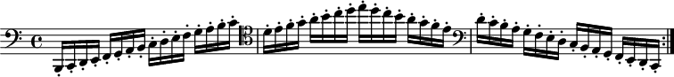
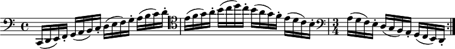
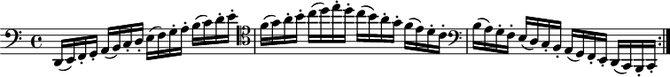
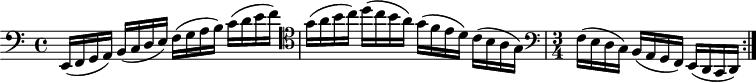
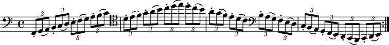
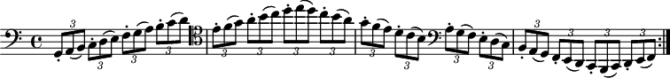
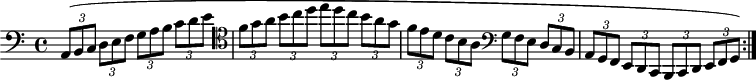

His interval exercises were scales in thirds, fourths, and fifths. 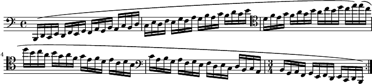 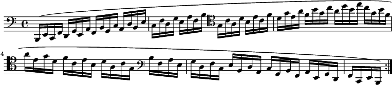 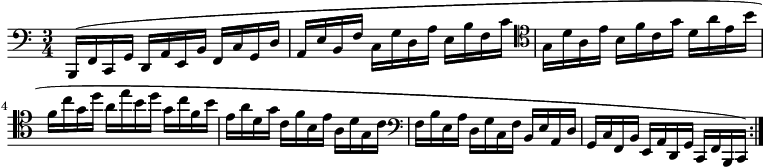
His long tone exercises were reserved only for problem notes. There was no point in practicing a long tone that you were already good at. Otherwise it isn't practice. 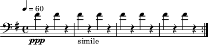 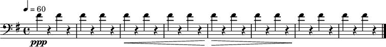 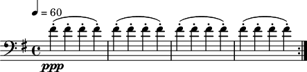 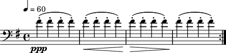 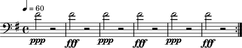 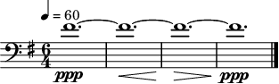 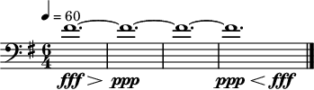
Tuners should be used with these exercises as a reference only.
In adition to these long tone exercises, he also had one note and three note exercises. These also practiced intervals. The concept was to start with a problem note and do intervals starting with a minor second, growing to an octave. You also could use three problem notes and create the three note exercises. 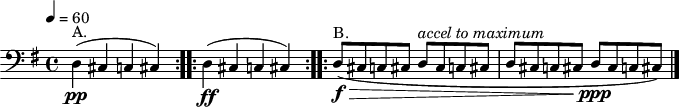 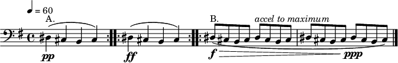 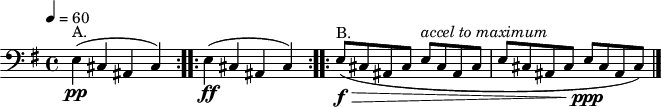
Three note exercises involved selecting three notes, and a direction to go for each note, and then growing in intervals. 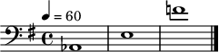 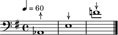 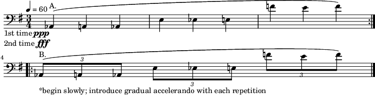
These exercises were designed to address all areas of difficulty. Players must be diligently listening to intonation, tone, dynamics, and articulations in all exercises. cite:&lowe08_norman_herzb